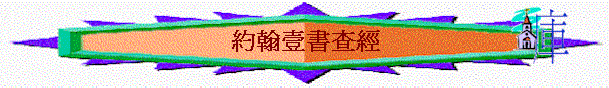

[ Home ] [ 經卷課程 ] [ 查經資料 ] [ 栽培課程 ] [ 事奉培訓 ] [ 聚會資源 ] [ 佈道資源 ] [ 胸懷普世 ] [ 異端異教 ] [ 信息分享 ] [ 專題研究 ] [ 祈禱專題 ] [ 詩歌簡譜 ] [ 動畫之廊 ] [ 輔導關懷 ] [ 站長聯絡 ]
從約壹1:1-10看不犯罪 從約壹2:3-11看遵主道 從約壹2:12-17看不愛世界 從約壹3:11-21看相愛